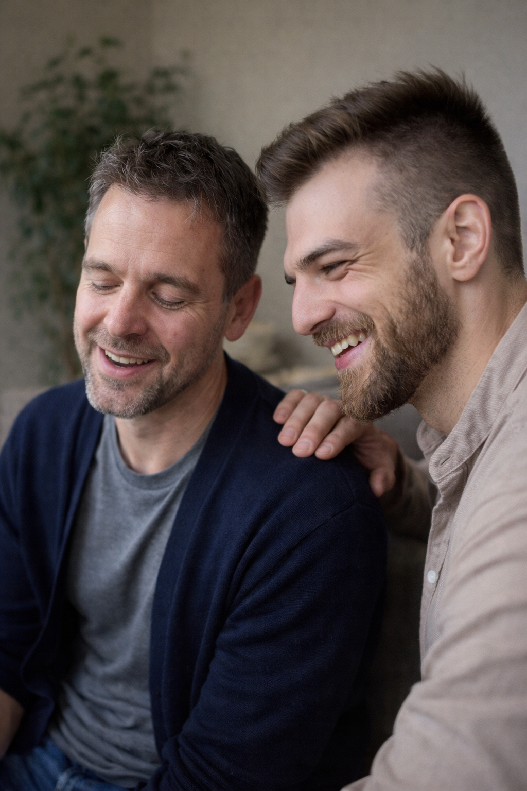

Ve své práci vytvářím bezpečný a respektující prostor pro léčení zranění, která vznikla překročením vašich hranic – ať už šlo o násilí, manipulaci nebo jiné formy nátlaku.
Pracuji mimo jiné s přístupem E-motion, který umožňuje jít skrze tělo a prožitek – ne jen přes hlavu.
Společně můžeme vytvořit korektivní zkušenost – možnost projít si náročnou situaci, kterou si s sebou nesete, ale tentokrát jinak.
Ve vašem tempu, s vědomím volby a bezpečí. Můžete se zachovat jinak, situace může dopadnout jinak – a právě to může být hluboce léčivé.
Metoda E-motion